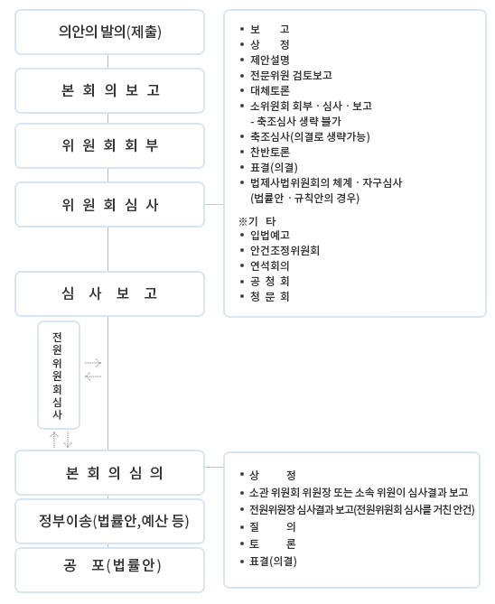

국회에서 법안은 일반적으로 다음과 같은 절차에 따라 법안으로 채택된다.

| 의안 | (대표)제안자 | 제안요지 | 기존 | 계류/처리 | 심사진행상태 |
| [2011446] 형법 일부개정법률안(전재수의원 등 10인) | 더불어민주당 국회의원 전재수 | 형법내 표현 "여성" 으로 수정 | 여러 조문에서 "부녀" 표현 사용 중 | 계류 | 소관위접수 |
| 의안 | (대표)제안자 | 제안요지 | 기존 | 계류/처리 | 심사진행상태 |
| [2012134] 형법 일부개정법률안(오신환의원 등 27인) | 바른미래당 국회의원 오신환 | 업무상위력간음 "7년이하" 구금감호자간음 "10년이하" | 업무상위력간음 5년이하, 구금감호자간음 7년이하 | ||
| [2012145] 성폭력방지 및 피해자보호 등에 관한 법률 일부개정법률안(김삼화의원 등 27인) | 바른미래당 국회의원 김삼화 | 국가기관등 성폭력/은폐사건 발생시 기간내 대책제출 및 여가부 현장점검 | 재발방지대책 기한 없고 여가부의 재점검 권한 없음, 은폐사건 규정없음 | ||
| [2012131] 성폭력범죄의 처벌 등에 관한 특례법 일부개정법률안(오신환의원 등 27인) | 바른미래당 국회의원 오신환 | 업무상추행 "5년이하" 감호자추행 "7년이하" DNA등증거시 시효10년연장 | "2년이하" "3년이하", 추행죄는 공소시효 특례 없음 | ||
| [2012153] 성폭력방지 및 피해자보호 등에 관한 법률 일부개정법률안(김삼화의원 등 27인) | 바른미래당 국회의원 김삼화 | 성폭력 손해배상 소멸시효 "5년/20년", 업무상성폭력은 고용기간중 시효정지 | 현재는 "3년/10년" (불법행위 및 가해자를 안 날로부터 / 피해일로부터) | ||
| [2012254] 형법 일부개정법률안(황주홍의원 등 17인) | 민주평화당 국회의원 황주홍 | 사실적시 명예훼손죄 삭제, 업무상위력간음 "5천만원이하" | 사실적시 명예훼손 처벌, 업무상위력간음 1500만원 이하 | ||
| [2012256] 성폭력범죄의 처벌 등에 관한 특례법 일부개정법률안(손금주의원 등 11인) | 무소속 국회의원 손금주 | 업무상위력 강간 "7년이상" 간음또는추행 "3년이하" | 권력형 강간죄 따로없음 / 업무상추행 2년이하 | ||
| [2012253] 성폭력방지 및 피해자보호 등에 관한 법률 일부개정법률안(황주홍의원 등 17인) | 민주평화당 국회의원 황주홍 | 미성년자 보호시설 업무상위력간음/추행 신고의무, 미이행시 "1년이하" | 강간등상해치상만 신고의무, 은폐축소금지규정없음, 처벌규정없음 | ||
| [2012252] 성폭력범죄의 처벌 등에 관한 특례법 일부개정법률안(황주홍의원 등 17인) | 민주평화당 국회의원 황주홍 | 업무상위력추행 "3년이하" 구금감호자추행 "5년이하" 위력간음 공소시효폐지 | 위력추행 "2년이하" 감호자추행 "3년이하" 강간등살인만 시효없음 | ||
| [2012232] 성폭력방지 및 피해자보호 등에 관한 법률 일부개정법률안(김삼화의원 등 27인) | 바른미래당 국회의원 김삼화 | 업무상 성폭력 피해자에게 가해서는 안되는 불이익처분 구체적나열 | "해고 그 밖의 불이익" 으로 모호한 상태 | ||
| [2012282] 형법 일부개정법률안(나경원의원 등 10인) | 자유한국당 국회의원 나경원 | 경제사회적 지위를 이용한 간음죄 신설 | 업무고용관계에서 보호 또는 감독 하에 있어야 성립 | ||
| [2012281] 성폭력범죄의 처벌 등에 관한 특례법 일부개정법률안(나경원의원 등 10인) | 자유한국당 국회의원 나경원 | 경제사회적 지위이용 추행죄 신설 | 업무고용관계에서 보호 또는 감독 하에 있어야 성립 |
사회적 요구 언급 사례
| 요약 | (대표)제안자 | 제안요지 | 기존 | 결과 |
| 스토킹 처벌법에 대한 의지 | 정부 (회의주재: 국무총리 이낙연) | '스토킹 처벌법' 상반기내 제정 발표 | 경범죄처벌법 (지속적 괴롭힘) 10만원 이하 | 발의조차 않고 2018 상반기 종료 |
| 성희롱 방지 단일법 요구 | 여성정책연구원 선임연구위원 박선영 | 성희롱 방지 단일법 필요성 요구 | 직장내 성희롱 및 아동청소년 대상 성희롱만 처벌 | 358회 천정배의원 법안발의로 이어짐 |
| 의안 | (대표)제안자 | 제안요지 | 기존 | 계류/처리 | 심사진행상태 |
| [2012334] 형법 일부개정법률안(이언주의원 등 10인) | 바른미래당 국회의원 이언주 | 업무상위력간음 "7년이하" 구금감호자간음 "10년이하" | 업무상위력간음 5년이하, 구금감호자간음 7년이하 | ||
| [2012336] 성폭력범죄의 처벌 등에 관한 특례법 일부개정법률안(이언주의원 등 10인) | 바른미래당 국회의원 이언주 | 업무상위력추행 "3년이하" 감호자추행 "5년이하" DNA증거등 시효 "25년연장" | 업무상위력추행 2년 감호자추행 3년 DNA증거등 시효10년연장 | ||
| [2012351] 성폭력범죄의 처벌 등에 관한 특례법 일부개정법률안(신용현의원 등 27인) | 바른미래당 국회의원 신용현 | 교육관계로 보호감독 하의 추행도 위력에 의한 추행으로 인정 | 업무고용관계에서 보호 또는 감독 하에 있어야 성립 | ||
| [2012349] 성폭력방지 및 피해자보호 등에 관한 법률 일부개정법률안(신용현의원 등 27인) | 바른미래당 국회의원 신용현 | 대학 등을 공공기관에 준해 성폭력 예방교육 및 상담기구 운영 | 공공기관에 대해서만 포괄적 조치 있을 뿐 | ||
| [2012397] 형법 일부개정법률안(진선미의원 등 19인) | 더불어민주당 국회의원 진선미 | 성폭력피해 적시의 경우 명예훼손 제외 | 사실적시 명예훼손 성립 | ||
| [2012373] 성폭력방지 및 피해자보호 등에 관한 법률 일부개정법률안(신용현의원 등 27인) | 바른미래당 국회의원 신용현 | 미성년자 보호시설 종사자 성폭력 가중처벌 및 신고누락 처벌조항 신설 | 미성년자 보호시설 종사자는 신고의무 있으나 위반시 제재조항이 없음 | ||
| [2012370] 성폭력범죄의 처벌 등에 관한 특례법 일부개정법률안(이철규의원 등 23인) | 자유한국당 국회의원 이철규 | 성폭력범죄시 음주약물 의한 심신미약 배제 | 심신미약은 이유무관 감면사유 되고 있음 | ||
| [2012368] 성폭력범죄의 처벌 등에 관한 특례법 일부개정법률안(유승희의원 등 23인) | 더불어민주당 국회의원 유승희 | 성폭력피해 적시시 명예훼손 미적용 | 사실적시 명예훼손 성립가능 |
| 의안 | (대표)제안자 | 제안요지 | 기존 | 계류/처리 | 심사진행상태 |
| [2012439] 형법 일부개정법률안(권칠승의원 등 10인) | 더불어민주당 국회의원 권칠승 | 업무상위력간음 "10년이하" 구금감호자간음 "10년이하" | 업무상위력간음 5년이하, 구금감호자간음 7년이하 | ||
| [2012440] 성폭력범죄의 처벌 등에 관한 특례법 일부개정법률안(권칠승의원 등 10인) | 더불어민주당 국회의원 권칠승 | 업무상위력추행 "5년이하" 구금감호자추행 "5년이하" 공소시효폐지 | 업무상위력추행 2년 구금감호자추행 3년 강간등살인만 공소시효없음 | ||
| [2012456] 성폭력범죄의 처벌 등에 관한 특례법 일부개정법률안(장정숙의원 등 10인) | 바른미래당 국회의원 장정숙 | 성폭력 피해자 국선변호사에 전문지식 및 감수성 교육 의무화 | 연 1회 교육중이나 실효성 부족한 상태 | ||
| [2012510] 형법 일부개정법률안(표창원의원 등 10인) | 더불어민주당 국회의원 표창원 | 사실적시 명예훼손 조건 "사람을 비방할 목적" 추가 | 고의이기만 하면 성립 | ||
| [2012507] 형법 일부개정법률안(이명수의원 등 10인) | 자유한국당 국회의원 이명수 | 업무상위력등간음 "사회적 지위 등 우월한 영향력" 시 성립 | 업무고용관계에서 보호 또는 감독 하에 있어야 성립 | ||
| [2012519] 성폭력범죄의 처벌 등에 관한 특례법 일부개정법률안(이명수의원 등 10인) | 자유한국당 국회의원 이명수 | 언동에 의한 음란행위죄 신설 | 직장내 성희롱 및 아동청소년 대상 성희롱만 처벌 | ||
| 자유한국당 국회의원 홍철호 | '피해자 동의 없으면 강간' | 항거불능 또는 저항을 현저히 곤란하게 만들 정도 폭행협박 | |||
| [2012522] 성폭력범죄의 처벌 등에 관한 특례법 일부개정법률안(손금주의원 등 10인) | 무소속 국회의원 손금주 | 성폭력범죄에 대한 언어적 또는 정보통신망이용한 2차가해 처벌조항 신설 | 해고 등 협소한 불이익처분만 금지 | ||
| [2012564] 형법 일부개정법률안(강창일의원 등 20인) | 더불어민주당 국회의원 강창일 | 피해자 동의없으면 강간, 형량 5년이상 | 항거불능 또는 저항을 현저히 곤란하게 만들 정도 폭행협박/3년이상 | ||
| [2012559] 성폭력방지 및 피해자보호 등에 관한 법률 일부개정법률안(윤종필의원 등 10인) | 자유한국당 국회의원 윤종필 | 성폭력가해자 징벌적 손해배상 신설 | 손해배상 관련 조항 없음 | ||
| [2012557] 성폭력방지 및 피해자보호 등에 관한 법률 일부개정법률안(유승희의원 등 19인) | 더불어민주당 국회의원 유승희 | 공무원은 직무수행중 성폭력 인지하면 신고의무 | 공무원은 원래 범죄인지시 고발의무 있으나 잘 지켜지지 않음 | ||
| [2012601] 형법 일부개정법률안(백혜련의원 등 11인) | 더불어민주당 국회의원 백혜련 | 피해자 동의 없으면 강간성립, 폭행협박 있으면 가중처벌 | 항거불능 또는 저항을 현저히 곤란하게 만들 정도 폭행협박 | ||
| [2012607] 성폭력범죄의 처벌 등에 관한 특례법 일부개정법률안(윤종필의원 등 10인) | 자유한국당 국회의원 윤종필 | DNA등 증거시 공소시효 "15년" 연장 | 10년 연장 | ||
| [2012711] 성폭력범죄의 처벌 등에 관한 특례법 일부개정법률안(김삼화의원 등 11인) | 바른미래당 국회의원 김삼화 | 미성년자 간음 추행죄 공소시효 배제 | 준강간/강제추행 이상만 공소시효 배제 | ||
| [2012725] 형법 일부개정법률안(천정배의원 등 12인) | 민주평화당 국회의원 천정배 | 성희롱죄 신설 | 직장내 성희롱 및 아동청소년 대상 성희롱만 처벌 | ||
| [2012735] 성폭력방지 및 피해자보호 등에 관한 법률 일부개정법률안(남인순의원 등 10인) | 더불어민주당 국회의원 남인순 | 직장내성폭력 피해자보호 및 2차가해기관 재정삭감 | 해고등 불리한 처분만 금지, 2차가해기관/단체 제재수단 없음 | ||
| [2012724] 성폭력범죄의 처벌 등에 관한 특례법 일부개정법률안(박경미의원 등 10인) | 더불어민주당 국회의원 박경미 | 성폭력 피해자 전담검사/재판부 조건삭제, 피해자 성이력 증거채택금지 | "특별한 사정이 없으면" 전담조사관 및 전담재판부 담당 | ||
| [2012795] 형법 일부개정법률안(천정배의원 등 10인) | 민주평화당 국회의원 천정배 | 미동의 간음, 미동의 추행죄 신설 | 강간 및 강제추행죄 모두 폭행협박 필요 |
| 의안 | (대표)제안자 | 제안요지 | 기존 | 계류/처리 | 심사진행상태 |
| [2012844] 형법 일부개정법률안(신상진의원 등 10인) | 자유한국당 국회의원 신상진 | 업무상위력 간음 징역 '6년이하' 추행 "5년이하" 공소시효삭제 | 업무상위력 간음 5년이하 추행 2년이하, 강간살인등만 공소시효없음 | ||
| [2012832] 성폭력방지 및 피해자보호 등에 관한 법률 일부개정법률안(신보라의원 등 11인) | 자유한국당 국회의원 신보라 | 직장내성폭력 피해자보호 및 2차가해방지 | 해고등 불리한 처분만 금지되고 공간분리, 즉각조사 등 중요 규정들 없음 | ||
| [2012858] 성폭력방지 및 피해자보호 등에 관한 법률 일부개정법률안(권미혁의원 등 10인) | 더불어민주당 국회의원 권미혁 | 국가기관등 성폭력 발생시 3개월내 재발방지대책 제출 및 여가부 현장점검 | 재발방지대책 제출기한 없고 여가부의 재점검 권한 없음 | ||
| [2012963] 형법 일부개정법률안(곽상도의원 등 11인) | 자유한국당 국회의원 곽상도 | 업무상위력 간음/추행 '기타관계 사실상 실질적 영향력' 시 성립 | 업무고용관계에서 보호 또는 감독 하에 있어야 성립 | ||
| [2012974] 형법 일부개정법률안(이혜훈의원 등 10인) | 바른미래당 국회의원 이혜훈 | 당사자 법익 침해와 관련시 사실적시 명예훼손 위법성조각 | 공공의 이익에 관한 것이어야 위법성조각 | ||
| [2013049] 성폭력범죄의 처벌 등에 관한 특례법 일부개정법률안(하태경의원 등 10인) | 바른미래당 국회의원 하태경 | 성폭력피해 적시시 재판 종료까지 명예훼손 공소제기 금지 | 사실적시 명예훼손 성립가능 | ||
| [2013098] 형법 일부개정법률안(최경환의원 등 11인) | 자유한국당 국회의원 최경환 | 피해자 반항 '곤란할 정도' 폭행협박이면 강간 | 항거불능 또는 저항을 현저히 곤란하게 만들 정도 폭행협박 | ||
| [2013224] 성폭력범죄의 처벌 등에 관한 특례법 일부개정법률안(손금주의원 등 10인) | 무소속 국회의원 손금주 | 신상등록 성범죄자 출국시 무조건 관할서장에 신고 | 6개월 이상 출국시에만 신고 | ||
| [2013255] 성폭력범죄의 처벌 등에 관한 특례법 일부개정법률안(정춘숙의원 등 10인) | 더불어민주당 국회의원 정춘숙 | 일명 "리벤지포르노 처벌법" - 불법촬영 및 유포죄 완전히 재설계 | 자신신체 처벌못함, 동의받으면 감경, 음란성 기준모호, 벌금등 솜방망이 | ||
| [2013313] 성폭력범죄의 처벌 등에 관한 특례법 일부개정법률안(이춘석의원 등 12인) | 더불어민주당 국회의원 이춘석 | 통신음란 "2천만이하" 불법촬영 "5천만이하" 성적"모욕감"유발시 | 통신음란 5백만, 불법촬영 2천만, 성적"수치심"유발시 | ||
| [2013574] 형법 일부개정법률안(윤후덕의원 등 11인) | 자유한국당 국회의원 박인숙 | 음주약물 의한 심신미약 형감면 제외 | 심신미약은 이유불문 형벌 감면대상 | ||
| [2013317] 형법 일부개정법률안(박완수의원 등 14인) | 자유한국당 국회의원 박완수 | 강간 추행의 경우 작량감경 못하게 | 법관 작량감경 가능 | ||
| [2013361] 성폭력범죄의 처벌 등에 관한 특례법 일부개정법률안(이찬열의원 등 10인) | 바른미래당 국회의원 이찬열 | 친족관계 성범죄 공소시효 폐지 | 강간 살인 등만 공소시효 없음 |
| 의안 | (대표)제안자 | 제안요지 | 기존 | 계류/처리 | 심사진행상태 |
| [2013433] 성폭력범죄의 처벌 등에 관한 특례법 일부개정법률안(윤후덕의원 등 10인) | 더불어민주당 국회의원 윤후덕 | 성폭력상습범 가중처벌, 16세 미만 대상시 공소시효 없음 | 13세 미만 대상이어야 공소시효 없음 | ||
| [2013431] 성폭력범죄의 처벌 등에 관한 특례법 일부개정법률안(박경미의원 등 10인) | 더불어민주당 국회의원 박경미 | 미성년 및 장애인 대상 성폭력시 신속수사, 재판장만 피해자 신문 | 검사, 변호사 등이 피해자 신문할 수 있음 | ||
| [2013574] 형법 일부개정법률안(윤후덕의원 등 11인) | 더불어민주당 국회의원 윤후덕 | 음주약물 의한 형감면 제외 | 심신미약은 감면대상 | ||
| [2013593] 형법 일부개정법률안(백혜련의원 등 11인) | 더불어민주당 국회의원 백혜련 | 업무상위력 간음 징역 '10년이하' | 5년이하 | ||
| [2013594] 성폭력범죄의 처벌 등에 관한 특례법 일부개정법률안(백혜련의원 등 11인) | 더불어민주당 국회의원 백혜련 | 업무상위력추행 "5년이하" 구금감호자추행 "7년이하" | 업무상위력추행 2년이하, 구금감호자추행 3년이하 | ||
| [2013822] 성폭력방지 및 피해자보호 등에 관한 법률 일부개정법률안(손금주의원 등 11인) | 무소속 국회의원 손금주 | 직장내성폭력 피해자의 조력자에 대한 불이익처분 금지 | 피해자 본인에 대한 불이익처분만 금지 |
| 의안 | (대표)제안자 | 제안요지 | 기존 | 계류/처리 | 심사진행상태 |
| [2014045] 성폭력범죄의 처벌 등에 관한 특례법 일부개정법률안(이종배의원 등 10인) | 자유한국당 국회의원 이종배 | 친족관계 성범죄 공소시효 10년 연장 | 미성년자 및 장애인 대상으로만 시효연장 | ||
| [2014076] 성폭력범죄의 처벌 등에 관한 특례법 일부개정법률안(이동섭의원 등 10인) | 바른미래당 국회의원 이동섭 | 카메라등촬영 "10년이하" 유포 "5년이하" | 카메라등촬영 5년이하, 유포 3년이하 |